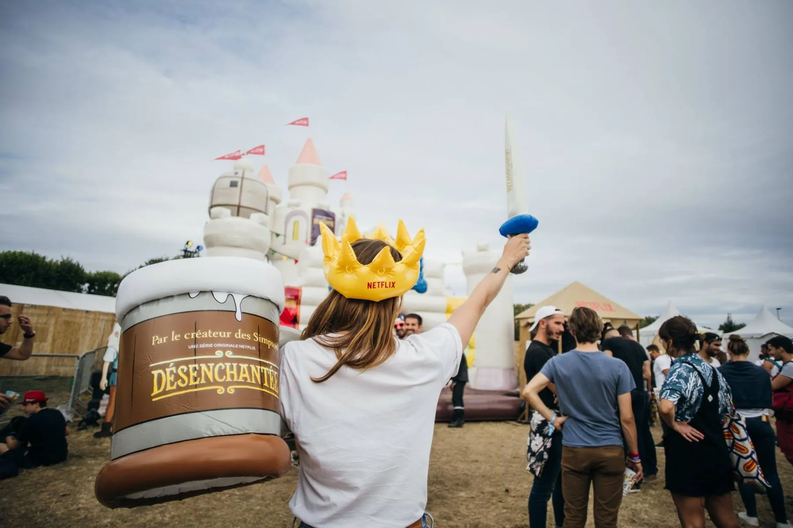
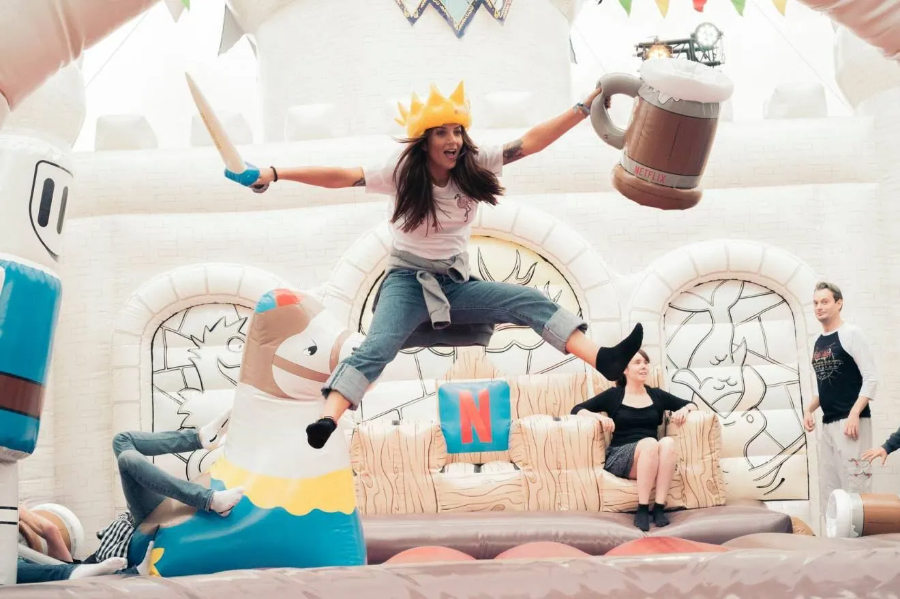
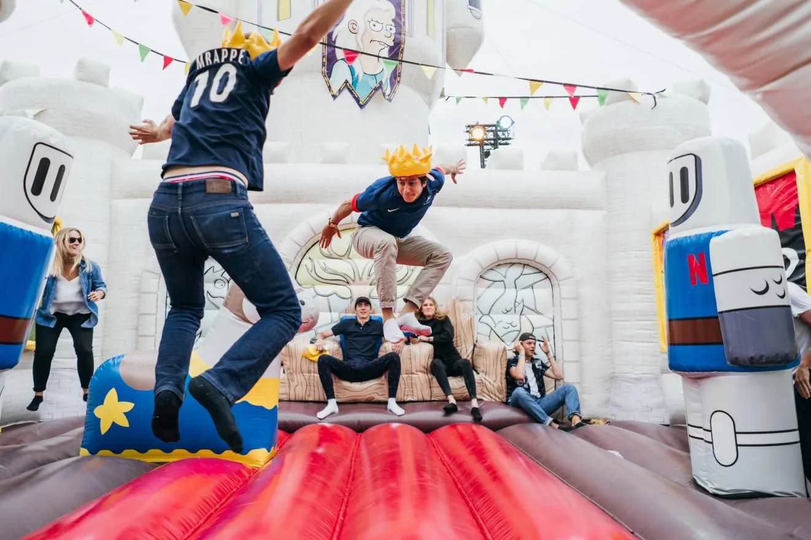
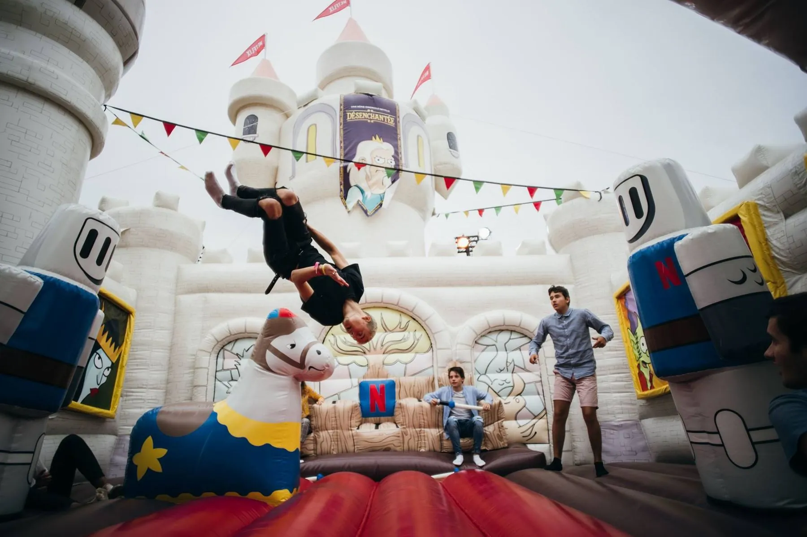

Quand Netflix lance « Désenchantée », la première série de Matt Groening, l'enjeu n'est pas de communiquer plus. C'est d'exister dans un flux où tout se ressemble, où personne ne s'arrête.
Netflix lance « Désenchantée », la première série de Matt Groening. Le problème n'est pas de communiquer plus, c'est d'exister dans un flux où tout se ressemble et où personne ne s'arrête. Concepteur-rédacteur sur le projet chez MNSTR, je porte la conception du dispositif et son écriture.
L'idée tient en une bascule : pour exister dans le flux, il faut en sortir. Quitter l'écran pour devenir un lieu, quitter la diffusion pour devenir un endroit qu'on traverse.
« Une nouvelle série vraiment… gonflée ! »
Au cœur de Rock en Seine, un château gonflable de 120 m², réplique du château de Dreamland, planté pour trois jours. Goodies thématiques, déclinaisons localisées, et une tournée européenne dans la foulée.
Le château devient l'un des spots les plus photographiés du festival. Cent mille festivaliers le traversent. Le contenu se crée tout seul, la diffusion suit, sans pousser un seul média.
Pour exister dans un flux saturé, mieux vaut un lieu qu'une pub.



